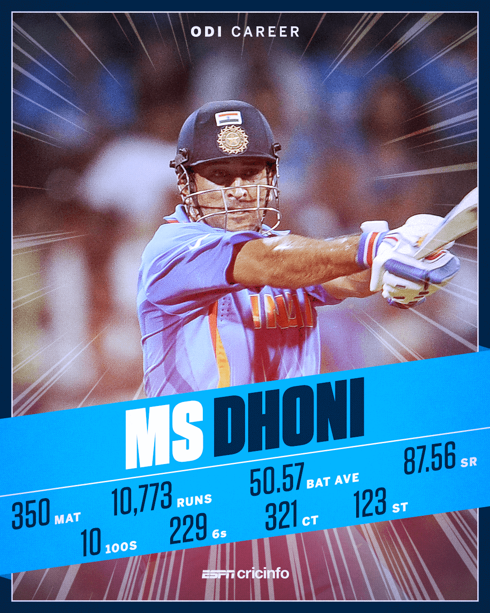
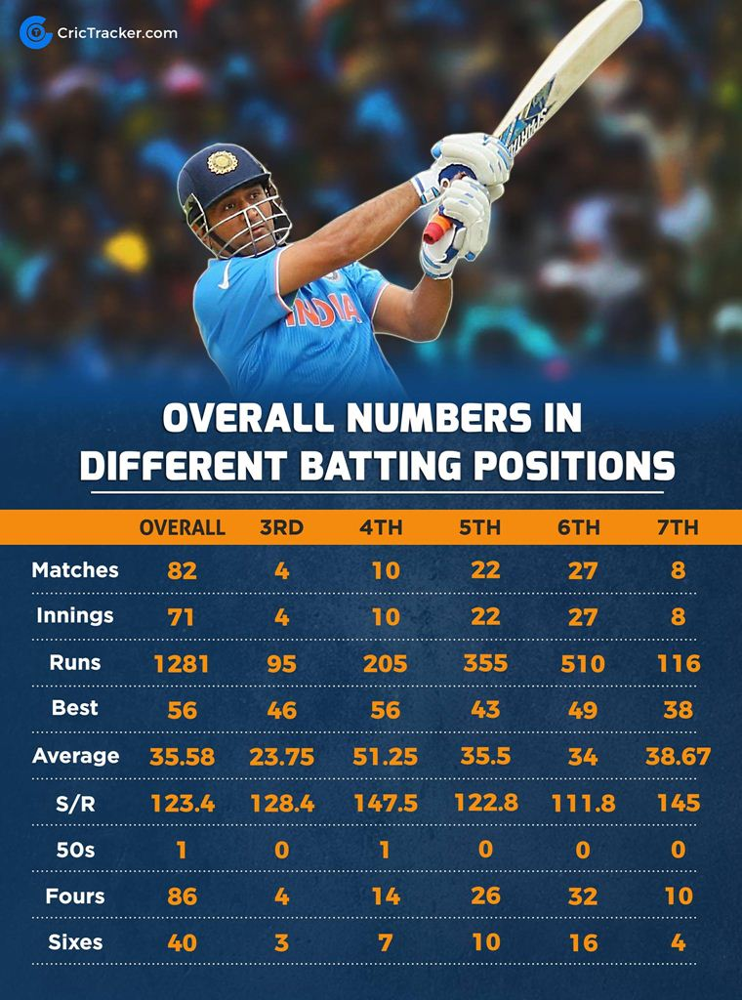
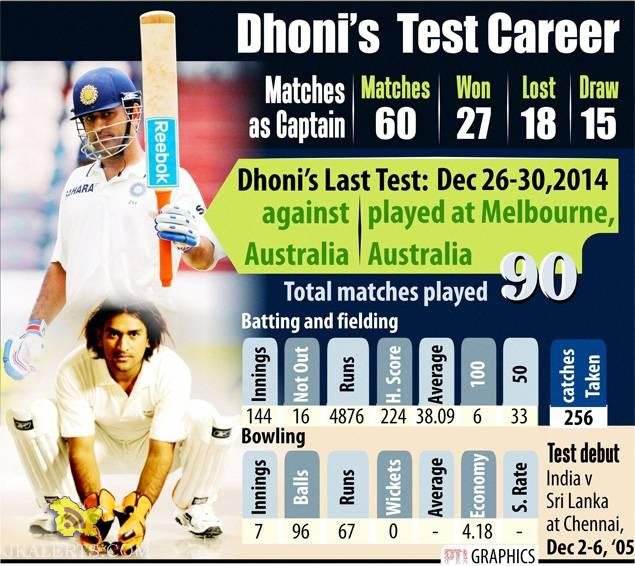

\
\
The Man,The Myth,the Legend ❤
Self-Confidence has always been one of my good qualities. I am always very confident. It is in my nature to be confident, to be aggressive. And it applies in my batting as well as wicketkeeping.
~ MS DHONI
About
MS Dhoni was born in 1981. He had a very simple family. He always wished to become a great sportsperson in life. Besides cricket, MS Dhoni also excels in sports like badminton and football. He was sent to the cricket club by his football coach. He started his journey as a full-time wicket-keeper for the cricket club he joined. Dhoni seriously focused on his cricket career after completing his 10th class. He excelled in Ranji, which led him to the Indian team. Some of his outstanding achievements are the World Cup, Rajiv Gandhi Khel Ratna award, and the prestigious Padma Bhushan.

ODI

T20

TEST
